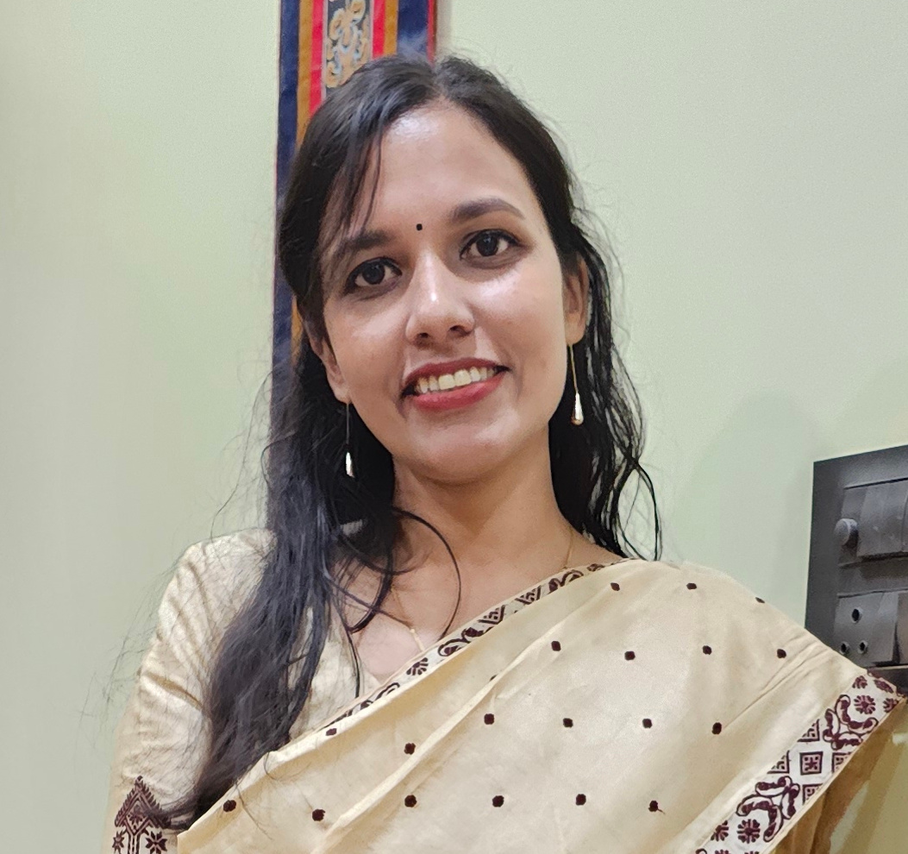

Dhritilekha Deka
Assistant Professor, Assam Engineering College, Guwahati
About Me
Self-motivated Ph.D. candidate, specialized in Geotechnical engineering along with a major interest in geo-environmental engineering. Intellectually curious and willing to learn. Excellent verbal and communication skills with a variety of audiences.
Education
Doctor of Philosophy in Civil Engineering
2019-present | Indian Institute of Technology Guwahati
Thesis: Augmentation of qualitative groundwater recharge through phytoremediation assisted infiltration
Supervisors: Dr. Ravi K, Dr. Archana M Nair
Master of Engineering in Earth System Science and Engineering
2017-2019 | Indian Institute of Technology Guwahati
CGPA: 8.13/10
Thesis: Performance Evaluation of Terrestrial Photogrammetry for Generating High Resolution Digital Surface Model for Ground Surface
Supervisor: Dr. Ajay Dashora
Bachelor of Technology in Civil Engineering
2012-2016 | Kalinga Institute of Technology, Bhubaneswar
CPI: 8.8/10
Supervisor: Dr. P. C. Shah
Skills
Laboratory and Field Instruments
- Total Station
- Global Positioning System (GPS)
- Permeameters
- Infiltrometers
- Penetrometers
- Atomic Mass Spectrometer
- Resistivity meters
- pH meters
Software & Programming
- Programming Languages: Python, MATLAB, R
- GIS Software: ArcGIS, QGIS
- Cloud Computing: Google Earth Engine
- Hydrological models: SWAT
- Other software: AutoCAD, STAAD Pro, Adobe Photoshop, LaTeX, MS Office, Origin
Research Interests
- Geo-environmental engineering
- Groundwater and Soil Quality Monitoring
- Remote Sensing and GIS
- Hydrological Modeling
- Tracer hydrology
Academic Activities
- 2022: Attended tutorials for GIAN course on 'Spatial Data Science in Disaster Management' under Ministry of Human Resources Development, Government of India
- 2021: Attended tutorials and member of organizing committee in National Workshop on 'Cloud Computing and Hydro-Ecological Modelling for Himalayan Rivers', organized by IIT Guwahati
- 2021: Poster Presentation at AGU Fall Meeting 2021
- 2021: Attended a course on 'Using Google Earth Engine for Land Monitoring Applications' organized by NASA's ARSET
- 2020: Attended a course on 'Programming Approaches in Remote Sensing' organized by IEEE Geoscience and Remote Sensing Society
Publications
2024
Deka, D., Patwa, D., Nair, A. M., & Ravi, K. (2024). Influence of biochar amendment on removal of heavy metal from soils using phytoremediation by Catharanthus roseus L. and Chrysopogon zizanioides L. Environmental Science and Pollution Research.
Deka, D., Ravi, K., & Nair, A. M. (2024). Comparative Investigation of Different Plant Species for Heavy Metal Removal through Phytoremediation. Geo-Congress 2024.
Deka, D., Ravi, K., & Nair, A. M. (2024). Comparative Investigation of Different Plant Species for Heavy Metal Removal through Phytoremediation. Geo-Congress 2024.
2023
Kumar, A., Pal, A. K., Ahmad, A., Deka, D., & Nair, A. M. (2023). Critical Zone Mapping for Hazard Susceptibility Analysis. Book Chapter.
Nair, A. M., Deka, D., & Karangat, R. (2023). Assessment of land use land cover changes and its impact on groundwater resources of Kamrup along the banks of the River Brahmaputra. EGU 2023.
Nair, A. M., Deka, D., & Karangat, R. (2023). Assessment of land use land cover changes and its impact on groundwater resources of Kamrup along the banks of the River Brahmaputra. EGU 2023.
2022
Kumar, S., Devi, A. B., Deka, D., & Nair, A. M. (2022). A Climate Zone Perspective on Spatiotemporal Variations in GRACE Derived Groundwater Storage (GWS) in India. Journal of the Indian Society of Remote Sensing.
Devi, A. B., Deka, D., Aneesh, T. D., Srinivas, R., & Nair, A. M. (2022). Predictive modelling of land use land cover dynamics for a tropical coastal urban city in Kerala, India. Arabian Journal of Geosciences.
Choudhury, J., Gajamer, V., Deka, D., & Sekharan, S. (2022). Static and Dynamic Assessment of Tunnel Rock Supports in Weak Rock. Book Chapter.
Devi, A. B., Deka, D., Aneesh, T. D., Srinivas, R., & Nair, A. M. (2022). Predictive modelling of land use land cover dynamics for a tropical coastal urban city in Kerala, India. Arabian Journal of Geosciences.
Choudhury, J., Gajamer, V., Deka, D., & Sekharan, S. (2022). Static and Dynamic Assessment of Tunnel Rock Supports in Weak Rock. Book Chapter.
Awards
- GATE Scholarship under Ministry of Human Resources Development (MHRD), Government of India from 2017 onwards.
- Teaching Assistantship of NPTEL Higher Surveying course 2018-2019.
- AGU Travel Grant owner for AGU Fall Meeting 2021, New Orleans.
Contact
Address:
Department of Civil Engineering,
Assam Engineering College Guwahati,
Guwahati, Assam, India
Assam Engineering College Guwahati,
Guwahati, Assam, India